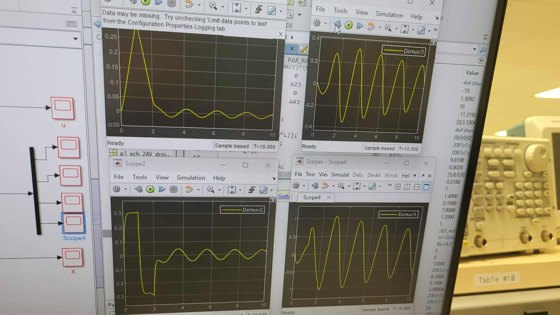
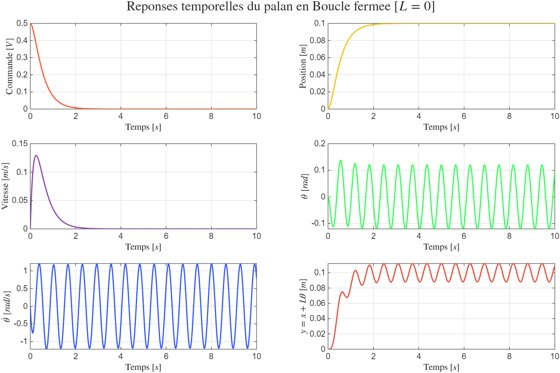
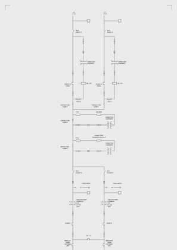
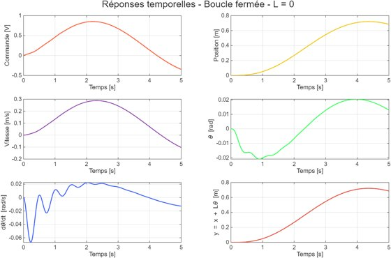
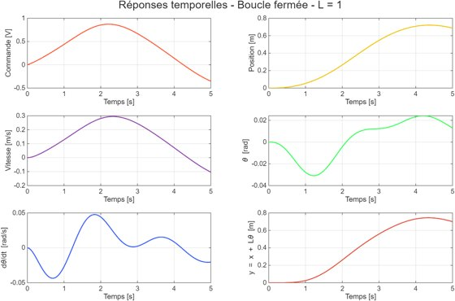
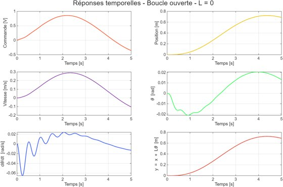
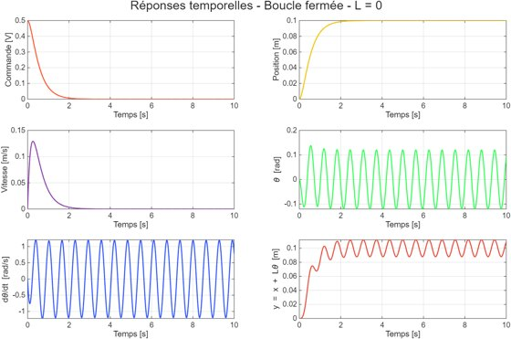
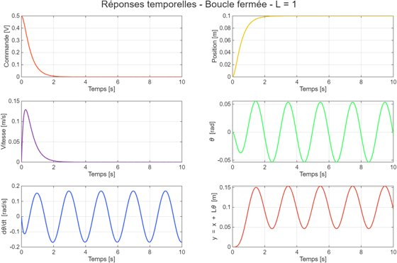
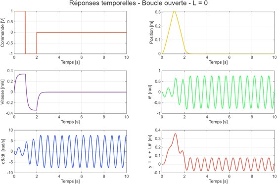
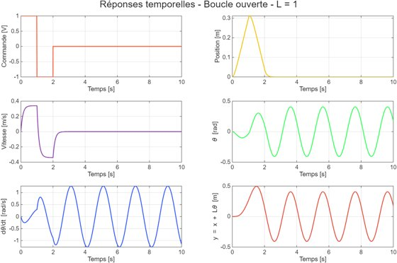

Motion control | Suspended loads
State-feedback crane control
Move a motorized cart while managing the swing of its suspended load.
- Context
- Team project, fall 2025
- Methods
- Pole placement and LQR
- Tools
- MATLAB and Simulink

Control problem
The horizontal cart motion and the load oscillation are coupled. An abrupt position command can move the cart quickly while leaving the load swinging.
Engineering work
- Identify a dynamic model from experimental data.
- Discretize the state-space system.
- Compare pole-placement and LQR feedback gains.
- Investigate parameter sensitivity and trajectory shaping.
- Estimate unmeasured states with a Kalman observer.
Design targets
- Response time
- Below 4 s
- Load angle
- Below 0.3 rad
- Command limit
- +/-24 V
These are targets from the project report, not a claim that every saved configuration satisfies them.
Outcome
The project produced feedback-gain scripts, state-estimation models, recorded datasets and response figures. The plots shown here are preserved outputs from the project archive; they have not been regenerated for this page.
Saved response figures
Saved crane response for R = 1.00.
From desired poles to feedback gains
This excerpt from the project gain-calculation script maps continuous poles to the discrete domain, then evaluates the closed-loop eigenvalues. F and G are the discrete state and input matrices; Tech is the sampling period.
for i = 1:nR
R = R_values(i);
s_des = [-R, -R, ...
-R*cosd(45) + 1j*R*sind(45), ...
-R*cosd(45) - 1j*R*sind(45)];
z_des = exp(s_des * Tech);
Kr = acker(F, G, z_des);
Kr_table(i,:) = Kr;
eig_table(i,:) = eig(F - G*Kr);
endSource: compute_Kr.m. Comments and unrelated setup are omitted from this displayed excerpt. MATLAB's Control System Toolbox is required for acker; the complete model is not included in this excerpt.
Validation considerations
A controller must be assessed against position tracking, swing, actuator saturation and sensitivity to the physical parameters. A visually smooth curve alone is not sufficient evidence of robustness.
Academic team project. Modeling, programming, documentation and validation were collaborative.
Archive gallery 11 items




















